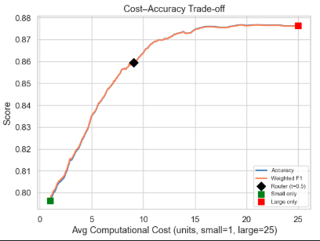
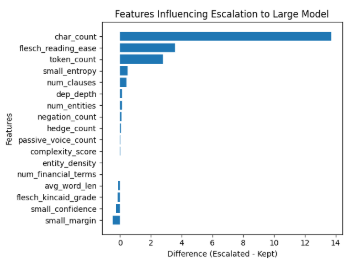
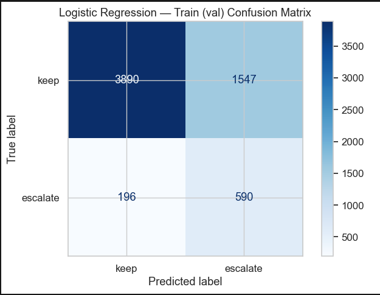
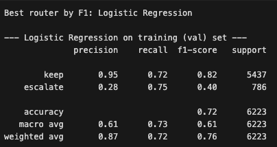
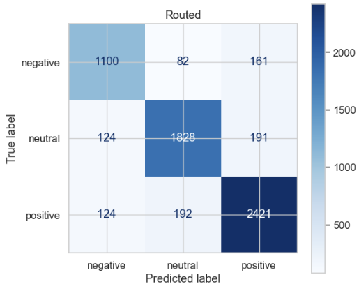
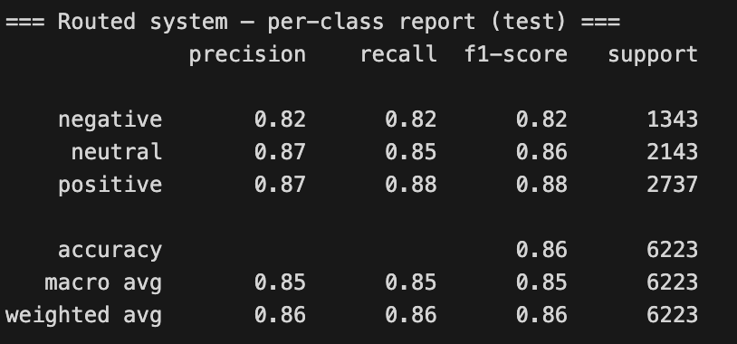

This page summarizes the final results of our linguistically-aware model router. The router uses a logistic regression classifier to decide whether each input should remain with the small TinyBERT model or be escalated to the larger RoBERTa-large model.
The router uses 17 features: 3 uncertainty features from the small model and 14 linguistic complexity features extracted from the input text.
| Strategy | Accuracy | Weighted F1 | Large-Model Usage | Avg Cost | Cost Reduction vs Large-Only |
|---|---|---|---|---|---|
| Small Only (TinyBERT) | 0.7964 | 0.7974 | 0.00% | 1.00 | 96.00% |
| Large Only (RoBERTa-large) | 0.8764 | 0.8763 | 100.00% | 25.00 | 0.00% |
| Router (Logistic Regression) | 0.8596 | 0.8595 | 33.68% | 9.08 | 63.67% |
| Oracle Upper Bound | 0.9197 | 0.9197 | 12.33% | 3.96 | 84.17% |
The router improves substantially over the small-only model while avoiding the full cost of always using RoBERTa-large. It achieves 0.8596 accuracy and 0.8595 weighted F1 while sending only 33.68% of inputs to the large model.
The oracle upper bound demonstrates that further improvements are still possible with better escalation decisions and more complex financial text.
This plot compares the accuracy and average cost of the small-only, large-only, and router strategies. The router provides a practical middle point between the low-cost small model and the high-cost large model.

The feature-based analysis of routing decisions shows that the router relies on both uncertainty signals and linguistic complexity features when deciding whether to escalate an input. Linguistic features help capture structural complexity that is not fully reflected by model uncertainty alone.

Final validation performance for the best-performing router selected using weighted F1-score on the validation set.


Final test-set performance of the linguistically-aware logistic regression router for financial sentiment analysis.

